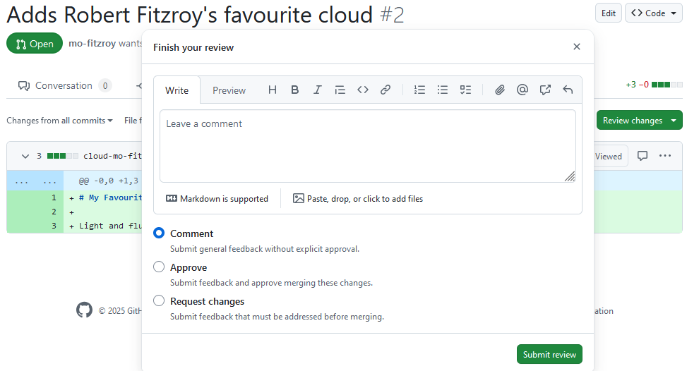
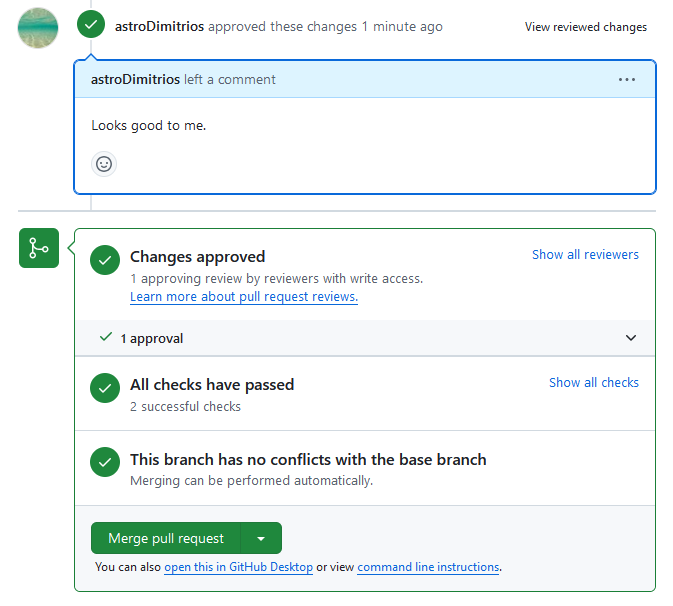
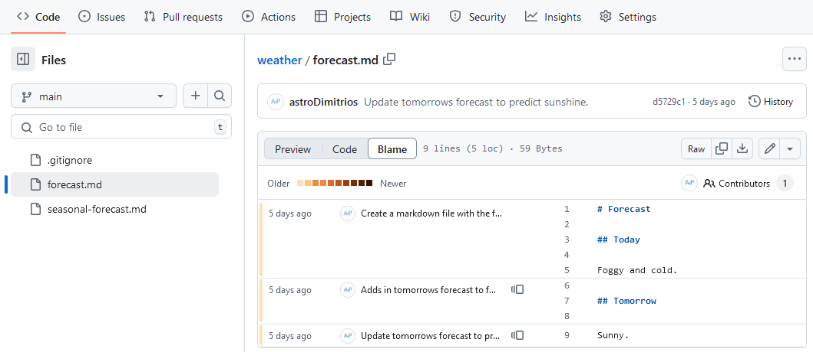

To be able to contribute to the git-training-demo repository your instructors will have to give you access. They are going to showcase this now. The steps are:
In the repository page on GitHub, click the “Settings” button on the right, select “Collaborators”, click “Add people”, and enter a username/s.

To accept access to the repository, you will need to go to https://github.com/notifications or check for an email notification. Once there you can accept access to the repository.
Permission Levels
Personal Repositories
Repositories on personal accounts only have two levels of permissions, the Owner and Collaborators1. To use the branching model in this lesson you would need adding as a collaborator. You can still contribute to a public repository without being added as a collaborator by using the forking model.
Organisational Repositories
Repositories in organisations have more levels of permissions2. Team members require at least write access to use the branching model. For all lower levels of access use the forking model.
Keypoints
- On a repository you own or are an admin on navigate to
https://github.com/<organisation>/<repository>/settings/accessto control access for collaborators. - You can give individuals or teams access to a repository.
Overview
Questions
- What levels of repository permissions are there?
Objectives
- Create an Issue with the correct labels.
- Assign yourself to an Issue.
GitHub Issues (tickets) are where you plan and track work. You can assign individuals to Issues and label them with a relevant tag such as bug or enhancement. Before opening a new Issue check whether there is already one open for the feature or bug by using GitHub’s search.
Here’s some advice for writing good Issues:
- Be clear and concise, provide plenty of detail
- State the expected outcomes
- Tag relevant collaborators
- Break up large Issues into several small ones and or use checklists to track tasks in the Issue
Open an Issue on the git-training-demo repository to add a file stating your favourite cloud type.
Navigate to the Issues tab:

This repositories Issue tab looks different to the weather repository you worked on in the Introduction to Git & GitHub lesson. It uses Issue templates to provide templates for bugs and feature requests. Click on the green Get started button next to the Feature request option:

You can see the Issue has text in the description already. This is from the template which provides a consistent structure to the Issues on this repo. The template has also added the enhancement label for you.
Add in a clear title such as “Add mo-fitzroy’s favourite cloud type”, replace ‘mo-fitzroy’ with your GitHub username. Click Submit new issue.
It’s a good idea to remind learners that images can be dropped straight into the Issue description. An image of a cloud should do!
Projects, milestones, and labels
Your instructor has set up a Project and some custom milestones for you to add to your Issue.
- Labels help you classify Issues and PRs.
- Milestones group Issues and PRs, tracking their progress towards a common milestone automatically.
- Projects are a tool for planning and tracking work via GitHub. Multiple repositories can be linked to a single project. Projects can have multiple views depending on your needs; some have kanban boards and gantt charts, others separate out an individual colleagues Issues to avoid clutter.
Assign yourself, a project, and a milestone to your Issue
On the right hand side of the Issue you can:
- Assign yourself to the Issue so that others know you are working on it.
- Add the Issue to a Project by clicking on the cog next to the Projects section. (If you don’t see a project related to the training you might not have been granted permissions, ask your instructors for help)
- Assign the Issue to a milestone.
Keypoints
- Issues are used to track and plan work.
- Issue templates provide template text for the first comment for new Issues of various types. They can auto-label Issues and encourage collaborators to give plenty of detail.
Overview
Questions
- What information should go on an Issue?
- What are Issue templates?
Objectives
- Describe the Feature Branch and Forking models.
In the git-novice lesson you learnt how to develop features on a branch and use a pull-request to merge the changes back into the main branch. You were unknowingly using a Git branching model called feature branch workflow.
As a reminder, we develop on branches to ensure that our development code doesn’t affect the production code on the main branch. Branches also allow your team to develop features in parallel.
A branching model (sometimes also called strategies or workflows) is the model your team adopts when writing, merging and deploying code when using a version control system. It is a set of rules that you must follow which outline how your team and collaborators interact with a shared codebase.
Having a clear model helps avoid merge conflicts, more on that later, and clearly sets out to new collaborators how they can contribute to your repository.
In this and the following episodes, we will outline some of the branching models that teams use in order to organize their work. We will look at their pros and cons and help decide which model you should choose based on your teams needs.
A branching model aims to:
- Enhance productivity by ensuring proper coordination among developers
- Enable parallel development
- Help organize a series of planned, structured releases
- Map a clear path when making changes from development through to production
- Maintain a bug-free code where developers can quickly fix issues and get these changes back to production without disrupting the development workflow
Git Branching Models
Some version control systems are more geared towards certain branching models. When using git you have a wide range of models to pick from. This means the first rule when collaborating using git is: “Talk about your branching model.”
A repository’s CONTRIBUTING file may include details of their branching model. This information might also be in a repository’s README file. If in doubt ask! You can also look at how other people appear to be contributing to the repository.
Below are a few models:
Feature Branch
In this model every small change or “feature” gets its own branch where the developers make changes. Once the feature is done, they submit a pull request and merge it into the main branch after review. Feature branches should be relatively short-lived.
Pros
- Each feature is developed away from
mainso you don’t affect production code - Multiple features can be developed in parallel feature branches
- It’s a simple model that’s easy for those new to git and your project
- Easy to set up with continuous integration testing and deployment
Cons
- If you don’t regularly merge changes to
maininto your feature branch it can become outdated, leading to merge conflicts - You may struggle if you need to maintain multiple production versions simultaneously in the same repository
The Feature Branch model is sometimes called GitHub Flow.
---
config:
gitGraph:
showCommitLabel: false
---
gitGraph
accDescr {A git graph showing four branches including the default
<code>main</code> branch.
Each circle is a commit.
A circle with an outline but no fill colour is a merge commit
where one branch has been merged into another.
The two feature branches and the <code>bug_fix</code> branch
all branch off of <code>main</code> at the same commit.
The <code>bug_fix</code> and <code>small_feature</code> branches
are merged back into <code>main</code> after
being developed on their branches.
The <code>large_feature</code> branch merges in the
changes to <code>main</code> to fix any conflicts
before the feature is ready to be merged
back into the <code>main</code> branch via a pull request.}
commit
branch bug_fix
checkout main
branch small_feature
checkout main
branch large_feature
checkout bug_fix
commit
checkout large_feature
commit
checkout main
merge bug_fix
checkout small_feature
commit
checkout large_feature
commit
checkout small_feature
commit
checkout main
merge small_feature
checkout large_feature
commit
merge main
checkout main
merge large_featureForking
In this model you make a fork (copy) of the whole repository you want to contribute to on GitHub in your personal space. You develop your changes using this fork. When a change is ready you open a pull request to contribute the changes back to the original repository.
Pros
- Removes the need to give all collaborators adequate permissions on your repository
- Only project maintainers can approve new code
- You can use any other model within your main repository and forks to develop changes
Git Flow
In this model the main development occurs in a develop branch. Feature branches are created from this develop branch. When the develop branch is ready for a release, you create a release branch which is then tested and merged onto the develop and main branches.
Pros
- There is a clear purpose for each branch
- Handles complex projects well
Cons
- Very steep learning curve, not suitable for novices
gitGraph
accDescr {A git graph showing the GitFlow model.}
commit tag:"0.1"
branch hotfix
checkout main
branch release
branch develop
checkout hotfix
commit
checkout develop
commit
branch small_feature
checkout develop
merge hotfix
branch large_feature
checkout small_feature
commit
checkout large_feature
commit
commit
checkout main
merge hotfix tag:"0.2"
checkout small_feature
commit
checkout develop
merge small_feature
checkout release
merge develop
checkout large_feature
commit
checkout release
commit
commit
checkout main
merge release tag:"1.0"
checkout develop
merge releaseRecommendations
For small projects using a Feature Branch model is normally sufficient. If your team is large, or you expect external collaborators to contribute then we recommend developing using forks. Most open source projects require you to submit new code using a fork. The next few episodes will guide you through examples of both models.
This wasn’t an exhaustive list of branching models! You can find more information using the links below:
- From Novice to Pro: Understanding Git Branching Strategies, GitProtect
- What is a Git workflow?, GitLab
Keypoints
- A clearly communicated branching model helps developers.
- For small projects use the Feature Branch flow.
- For larger projects or those with external collaborators use forks with feature branches.
Overview
Questions
- Which branching model is best for me?
Objectives
- Use the feature branch model to collaborate.
- Clone a remote repository.
In this episode we will use the Feature Branch model to contribute to the git-training-demo repository.
You will need to get into pairs so that you can review each others code changes. Your instructor may have already paired you with another learner.
Cloning a Repository
You will both need to download a copy of the git-training-demo repository. This is called “cloning a repository”.
$ cd ~/Desktop$ git clone git@github.com:metoffice/git-training-demo.gitMake sure to navigate to the Desktop folder first.
Feature Branches
You can now make changes to the git-training-demo repository using your clone. We will use a feature branch to develop our change on:
$ cd git-training-demo
$ git switch -c 1_favourite_cloudSwitched to branch '1_favourite_cloud'Notice the name of the branch is prefixed by the number 1. This is the Issue number of the Issue you created in Episode 2 Issues. Your team may choose a different naming convention such as prefixing the branch name by feature, bug etc.
Add in a new file cloud-mo-fitzroy.md, replace mo-fitzroy with your username:
$ nano cloud-mo-fitzroy.md
$ cat cloud-mo-fitzroy.md# My Favourite Cloud
Light and fluffy cumulus.Add and commit your changes:
$ git add cloud-mo-fitzroy.md
$ git commit -m "Adds Robert Fitzroy's favourite cloud"[1_favourite_cloud b7f26e6] Adds Robert Fitzroy's favourite cloud
1 file changed, 3 insertions(+)
create mode 100644 cloud-mo-fitzroy.mdThen push the changes to GitHub:
$ git pushEnumerating objects: 4, done.
Counting objects: 100% (4/4), done.
Delta compression using up to 4 threads
Compressing objects: 100% (2/2), done.
Writing objects: 100% (3/3), 357 bytes | 178.00 KiB/s, done.
Total 3 (delta 1), reused 0 (delta 0), pack-reused 0
remote: Resolving deltas: 100% (1/1), completed with 1 local object.
remote:
remote: Create a pull request for '1_favourite_cloud' on GitHub by visiting:
remote: https://github.com/MetOffice/git-training-demo/pull/new/1_favourite_cloud
remote:
To github.com:metoffice/git-training-demo.git
* [new branch] 1_favourite_cloud -> 1_favourite_cloud
branch '1_favourite_cloud' set up to track 'origin/1_favourite_cloud'.Note that we didn’t have to create a remote called origin: Git uses this name by default when we clone a repository. This is why origin was a sensible choice in the git-novice lesson when we were setting up remotes by hand.
Take a look at the repository on GitHub again, and you should be able to see the 1_favourite_cloud branch. You may need to refresh your browser to see the new branch.
If you see a message similar to the following:
fatal: The current branch 1_favourite_cloud has no upstream branch.
To push the current branch and set the remote as upstream, use
git push --set-upstream origin 1_favourite_cloud
To have this happen automatically for branches without a tracking
upstream, see 'push.autoSetupRemote' in 'git help config'.You will need to set the name of the upstream GitHub branch using the recommended git push command.
You can get git to automatically set the upstream branch. This avoids having to run git push with the –set-upstream flag the first time you push from a new branch.
Change your git config using:
$ git config --global push.autoSetupRemote trueIn this episode and in the git-novice lesson, our local repository only had a single “remote”, called origin. A remote is a copy of the repository that is hosted somewhere else, that we can push to and pull from, and there’s no reason that you have to work with only one. For example, on some large projects you might have your own copy in your own GitHub account (you’d probably call this origin) and also the main “upstream” project repository (let’s call this upstream for the sake of examples). You would pull from upstream from time to time to get the latest updates that other people have committed. We will practice using an upstream repository later in the forking model.
Remember that the name you give to a remote only exists locally. It’s an alias that you choose - whether origin, or upstream, or mo-fitzroy - and not something intrinsic to the remote repository.
The git remote family of commands is used to set up and alter the remotes associated with a repository. Here are some of the most useful ones:
git remote -vlists all the remotes that are configured (we already used this in the last episode)git remote add [name] [url]is used to add a new remotegit remote remove [name]removes a remote. Note that it doesn’t affect the remote repository at all - it just removes the link to it from the local repo.git remote set-url [name] [newurl]changes the URL that is associated with the remote. This is useful if it has moved, e.g. to a different GitHub account, or from GitHub to a different hosting service. Or, if we made a typo when adding it!git remote rename [oldname] [newname]changes the local alias by which a remote is known - its name. For example, one could use this to changeupstreamtomo-fitzroy.
Open a PR
In the git-novice lesson you practised opening a pull request.
You should see a notification appear on GitHub telling you the 1_favourite_cloud branch had recent pushes. The Collaborator should click on the green Compare & pull request button to open the PR.
If you don’t see this notification click on the branches dropdown, the button showing main, and click on the 1_favourite_cloud branch.

You should now see the Code view for the 1_favourite_cloud branch and a Contribute button. Click on the Contribute button and select the green Open pull request option.

You may have noticed when running git push on the 1_favourite_cloud branch for the first time the output contained:
remote: Create a pull request for '1_favourite_cloud' on GitHub by visiting:
remote: https://github.com/MetOffice/git-training-demo/pull/new/1_favourite_cloudYou could have also followed this link to create a new PR. We recommend you always open a draft PR after your first push. This gives you access to a diff of your changes against the target branch (usually main). When the changes are ready for review you can mark the PR as Ready for review.
Pull Request Templates
Notice the description has filled with a template. Just like this repository used Issue templates it also uses a PR template.
This template has a checklist that needs to be completed before opening the PR3. It also has checklists for science and code review. In the description scroll down to the checklists which look like this:
- [ ] I have read `CONTRIBUTING.md` and added my name as a Code Contributor.Some open source projects require you to add your name to a list of contributors. We will do this later so for now mark the task as complete. Replace the space in the square checkbox brackets with an x to mark the task as complete:
- [x] I have read `CONTRIBUTING.md` and added my name as a Code Contributor.Now when you open the PR it should look something like this:

This image shows PR number #8. This PR will close/fix Issue number #7 (the top left arrow). You can request a review on the top right. Some repositories will be set up to automatically assign a reviewer based on how many reviews each team member currently has open4. The bottom arrow shows the checklist items we marked as complete.
At the bottom of your PR you can see that a review is required before merging. All checks have passed, this repository has automatic checks for trailing whitespace, accidentally adding large files etc. More information can be found in the optional episode on pre-commit hooks.
Help: Some checks have failed
If your now open Pull Request says some checks have failed this is because your changes did not pass the automatic pre-commit checks.
Click on the Details link next to the failed test and fix your code on your local repository. Commit and then push this fix to GitHub. Your PR will automatically update and re-run the tests, you may need to refresh the page.
Automatically closing Issues via PRs
A PR can automatically close an Issue when it is merged into main. To use this GitHub functionality replace the templates Fixes <#ISSUE_NUMBER> line with either:
Closes #1or
Fixes #1Make sure you change 1 to your Issue number. The GitHub Documentation has more information on linking PRs to Issues.
In the next episode we will look at how these changes are reviewed and merged back into main in more detail.
Assign a Reviewer
Assign the other learner in your pair as the reviewer by clicking on the cog to the right of the Reviewers section.
On the right hand side of the PR you can also:
- Assign yourself to the PR.
- Add labels to the PR.
- Add the PR to a Project by clicking on the cog next to the Projects section. (If you don’t see a project related to the training you might not have been granted permissions, ask your instructors for help)
- Assign the PR to a milestone.
Keypoints
- Cloning a repository gives you a local copy of the repository:
git clone <repository> <directory> - Automatically close Issues when a PR is merged by adding a
Closes #<Issue number>line to the first comment in the PR. - Pull Request templates provide template text for the first comment for new Issues of various types, and Pull Requests. They can auto-label Issues and encourage collaborators to give plenty of detail.
Overview
Questions
- How can I use version control to collaborate with other people?
- What are Pull Request templates?
Objectives
- Review changes made by collaborators.
- Respond to a review.
In this section we will explore how to properly review code and suggest changes if necessary. Both science and code reviews happen in a Pull Request. The general process is outlined in the diagram below:
sequenceDiagram
accDescr {A sequence diagram showing the process of reviewing.}
autonumber
actor Developer
actor Reviewer
Developer->>Reviewer: Request a reviewer
Reviewer->>Reviewer: #32;
Note over Reviewer: Add the reviewer<br/>to the pull request
Reviewer->>Reviewer: #32;
Note over Reviewer: Perform the review
loop
Reviewer->>Developer: Submit the review
Developer->>Developer: #32;
Note over Developer: Respond to each<br/>review comment
Developer->>Reviewer: Re-request a review
Reviewer->>Reviewer: #32;
Note over Reviewer: Respond to each review<br/>comment response
end
Reviewer->>Developer: Approve the pull requestMake sure you know who is in your pair. Find your colleagues open PR on the git-training-demo repository using the Pull Requests tab or find the request for review in your notifications.
Reviewing Changes
You can add general science and code review comments in the Conversation tab. To review specific files go to the Files changed tab:

This tab shows a diff (difference) between your feature branch, 1_favourite_cloud, and the target branch, main. Your diff might look different, to swap between Unified and Split view click on the cog dropdown:

The default view shows a diff of the source code. We’ll stick with source code diffs for this lesson but you can change the view to rich diffs to display rendered changes to Markdown or Jupyter Notebook files. Click on the file icon on the far right of a diff for the file to swap to a rich diff:

To start a review you can click on the green Review changes button:

Normally it is useful to review each file one at a time and make comments inline first before adding general comments. Close the review popup and hover next to a line number until it becomes highlighted. Click on the line to add an inline comment:

You can make suggested changes using inline comments. Click on the file icon or press Ctrl+g:

Add in a suggested change for your review. Click on the green Start a review button. Now click on the green button in the top right which says Finish your review or Review Changes, add a comment, and select Request changes. When you’re finished click the green Submit review button.

The PRs Conversation tab now looks like this:

Responding to Review
Now you will respond to the review on the PR that you opened.
You can see merging is blocked because our reviewer has requested changes. You also have the option to commit the suggested change to your branch directly via the PR. Click on the Commit suggestion button. In the popup add a description then click on Commit changes:

You could have also committed the suggested changes to your feature branch using your local copy, pushed the changes to GitHub and then marked the conversation with the suggested change as resolved.
Re-request a review by clicking on the two arrows forming a circle next to the reviewers name at the top of the PR.
Help: Some checks have failed
Since our PR is running automatic checks it’s best not to make large changes by accepting suggestions this way. Instead make changes to your feature branch using your local copy, run the checks locally, push the changes to GitHub and then mark the conversations with the suggested changes as resolved. You can add a commit hash in the conversation which will automatically link to the commit responding to any review comments.
Approving Changes
Head back to your partners PR, if they re-requested a review you will have received another notification.
The Conversation tab should update to show the suggestion as Outdated because it has been resolved. It also gives you the option to view the new changes since your last review.

Click on the View changes button. If you are happy that your requested changes have been addressed then you can approve the PR:

Swap back to the Conversations tab. The PR is now ready to merge and has no conflicts with the base (main in this case) branch. Click Squash and merge; don’t forget to move the PR number to the start of the commit message like you did in the Version Control with Git lesson:

When your PR is merged the Conversations tab will show:

You can now delete the branch from GitHub by pressing the Delete branch button. Some repositories will be automatically set up to delete the feature branch after a PR is successfully merged.
If you head back to the main page of the git-training-demo repository you will see your new file in the code view for the main branch. The commit message for the PR merge is shown next to it. If you hover over the PR number (in this case #2) a popup will appear with details of the merged PR. Click on the number to take you to the closed PR.

Head over to the repositories Issues tab. Check that your Issue for adding your favourite cloud file was closed when you merged the PR.
Local Cleanup
In the git-novice lesson you learnt how to pull changes and clean up your branches after merging a PR.
You can now:
- Update your local copy of the
git-training-demorepository - Delete any branches that are no longer necessary
Solution (Solution).
- Update your local copy of the
git-training-demorepository
$ git switch main
$ git pullremote: Enumerating objects: 4, done.
remote: Counting objects: 100% (4/4), done.
remote: Compressing objects: 100% (3/3), done.
remote: Total 3 (delta 1), reused 0 (delta 0), pack-reused 0 (from 0)
Unpacking objects: 100% (3/3), 1.07 KiB | 20.00 KiB/s, done.
From github.com:metoffice/git-training-demo
39720d8..9bdd3b8 main -> origin/main
Updating 39720d8..9bdd3b8
Fast-forward
cloud-mo-fitzroy.md | 3 +++
1 file changed, 3 insertions(+)
create mode 100644 cloud-mo-fitzroy.md- Delete any branches that are no longer necessary
$ git remote prune originPruning origin
URL: git@github.com:metoffice/git-training-demo.git
* [pruned] origin/1_favourite_cloud$ git branch -D 1_favourite_cloudDeleted branch 1_favourite_cloud (was b7f26e6).Keypoints
- A Pull Request (PR) is where your code and science review takes place.
- General review comments go in the PR Conversations tab.
- View a diff of the changes in the PR Files changed tab.
- Make inline comments or suggested changes in the Files changed tab using the diff.
You’ve now used the Feature Branch model to:
- Open an Issue describing the feature or bug
- Clone a repository
- Create a branch to develop your changes on
- Make changes to your working copy
- Open a Pull Request
- Respond to review
- Update your local copy and tidy up your branches
sequenceDiagram
accDescr {A sequence diagram showing the steps for the branching model.}
autonumber
participant GHM as origin main
participant GHF as origin feature
participant M as main
GHM -->> GHM: #f
Note over GHM: Open an Issue for the change
GHM -->> M: #f
Note right of GHM: First time: git clone<br/>Then: git pull
create participant F as feature
M ->> F: Create a feature branch:<br/>git switch -c feature
loop
F ->> F: #f
Note over F: Develop changes:<br/>git add<br/>git commit
end
F -->> GHF: #f
Note left of F: Push to GitHub: git push<br/>The first push creates origin feature!
destroy GHF
GHF ->> GHM: #f
Note left of GHF: Pull Request and then Merge.<br/>Delete origin feature branch.
GHM -->> M: #f
Note right of GHM: git pull
Note over F: Delete branch:<br/>git branch -D feature
box GitHub Remote
participant GHM
participant GHF
end
box Local
participant M
participant F
endTake a break - get up and move about.
Overview
Questions
- How do I see a diff of the changes?
- How can I make inline comments or suggested changes?
Objectives
- Create a fork of a repository.
- Contribute to the upstream repository using the fork.
Most open source projects require new collaborators to contribute via a fork of the repository. A fork is simply a copy of the repository that you make on the server, in our case GitHub, side. This avoids having to give repository permissions to every single collaborator5. You may only have one fork of a repository in your personal space or organisation.
In this episode we will create a fork and contribute a change to the main GitHub repository using the feature branch model we have been practising.
We will continue working on the git-training-demo repository. Your permissions have been reduced so that you can no longer push to the main Met Office repository, you will have to use a fork! The main Met Office repository is now the upstream repository for you fork.
Open an Issue
Open a new issue like you did earlier to add more detail to your favourite cloud file.
Create a Fork
On the repository Code tab click on the Fork dropdown arrow and then the + Create a new fork button:

GitHub will take you to the Create a new fork page. There is no need to edit anything on this page. Click on the green Create fork button:

You should now see your repository fork. The repository is marked as a fork by the fork symbol next to the repository organisation and name in the top navigation bar. Under the main repository name you can see a link to the repository we forked from. The notification at the bottom of the screenshot shows whether your forks main branch is up to date with the upstream repository. If you have commits on your fork not present upstream you can Contribute your changes upstream via a PR. If your fork is behind the upstream repository you can Sync fork to pull in changes from the upstream repository.

Make Changes
To avoid overwriting your local version of the original Met Office git-training-demo repository you need to clone your fork to a different location.
To clone the repository into your Desktop folder:
$ git clone git@github.com:mo-fitzroy/git-training-demo.git ~/Desktop/mo-fitzroy-git-training-demoReplace ‘mo-fitzroy’ with the Owner’s username.
If you choose to clone without the clone path (~/Desktop/mo-fitzroy-weather) specified at the end, you will clone inside the git-training-demo folder!
Cloning into '~/Desktop/mo-fitzroy-git-training-demo'...
remote: Enumerating objects: 16, done.
remote: Counting objects: 100% (16/16), done.
remote: Compressing objects: 100% (16/16), done.
remote: Total 16 (delta 1), reused 11 (delta 0), pack-reused 0 (from 0)
Receiving objects: 100% (16/16), 5.01 KiB | 1.00 MiB/s, done.
Resolving deltas: 100% (1/1), done.Create your feature branch:
$ cd ~/Desktop/mo-fitzroy-git-training-demo
$ git switch -c 2_update_favourite_cloudSwitched to a new branch '2_update_favourite_cloud'Add more detail to your favourite cloud file:
$ nano cloud-mo-fitzroy.md
$ cat cloud-mo-fitzroy.md# My Favourite Cloud
Light and fluffy cumulus.
Nice to sail under.Add and commit your changes:
$ git add cloud-mo-fitzroy.md
$ git commit -m "Adds more details to Robert FitzRoy's favourite cloud file"[2_update_favourite_cloud 1b05798] Adds more details to Robert FitzRoy's favourite cloud file
1 file changed, 1 insertion(+)Push the changes to your GitHub fork:
$ git pushEnumerating objects: 5, done.
Counting objects: 100% (5/5), done.
Delta compression using up to 4 threads
Compressing objects: 100% (3/3), done.
Writing objects: 100% (3/3), 369 bytes | 123.00 KiB/s, done.
Total 3 (delta 1), reused 0 (delta 0), pack-reused 0
remote: Resolving deltas: 100% (1/1), completed with 1 local object.
remote:
remote: Create a pull request for '2_update_favourite_cloud' on GitHub by visiting:
remote: https://github.com/mo-fitzroy/git-training-demo/pull/new/2_update_favourite_cloud
remote:
To github.com:mo-fitzroy/git-training-demo.git
* [new branch] 2_update_favourite_cloud -> 2_update_favourite_cloud
branch '2_update_favourite_cloud' set up to track 'origin/2_update_favourite_cloud'.Open a Pull Request
Head back to your fork on GitHub and open a PR to contribute your changes upstream to the main git-training-demo repository. You must use the Fixes keyword this time to automatically close your Issue when the PR is merged since you are contributing the change from a Fork6.

The PR will now need to be approved and merged by your instructors.
Take a break here! This will give you and your co-instructor time to approve, and squash and merge the PRs.
Updating a Fork
Our fork is now behind the main upstream repository by one commit. We are going to update our fork. First we need to set the correct upstream remote in git.
Switch back to your forks main branch:
$ git switch mainNow run:
$ git remote -vorigin git@github.com:mo-fitzroy/git-training-demo.git (fetch)
origin git@github.com:mo-fitzroy/git-training-demo.git (push)This shows the GitHub remote links for our fork. To set the upstream remote we can run:
$ git remote add upstream git@github.com:MetOffice/git-training-demo.git
$ git remote -vorigin git@github.com:mo-fitzroy/git-training-demo.git (fetch)
origin git@github.com:mo-fitzroy/git-training-demo.git (push)
upstream git@github.com:MetOffice/git-training-demo.git (fetch)
upstream git@github.com:MetOffice/git-training-demo.git (push)Now git knows about the forks upstream repository. We can fetch the changes to the upstream repository by running:
$ git fetch upstreamremote: Enumerating objects: 6, done.
remote: Counting objects: 100% (6/6), done.
remote: Compressing objects: 100% (2/2), done.
remote: Total 4 (delta 3), reused 2 (delta 2), pack-reused 0 (from 0)
Unpacking objects: 100% (4/4), 1.10 KiB | 41.00 KiB/s, done.
From github.com:MetOffice/git-training-demo
* [new branch] main -> upstream/mainWe now have access to the upstream/main branch. To merge in the changes on upstream/main:
$ git merge upstream/mainAnd push:
$ git pushTotal 0 (delta 0), reused 0 (delta 0), pack-reused 0
To github.com:mo-fitzroy/git-training-demo.git
f87bb5c..90808ab main -> mainYour forks main branch is now up to date with the original git-training-demo repositories main branch.
Summary Diagram
The workflow for forking is similar to that for branching. There are only a few differences after you’ve set up your fork for the first time:
- You should open Issues on the upstream repository not your fork.
- After merging in a PR on the upstream repository you need the added step of syncing your forks
mainbranch.
sequenceDiagram
accDescr {A sequence diagram showing the steps for using
Forks with the branching model.}
autonumber
participant UM as upstream main
participant GHM as origin main
participant GHF as origin feature
participant M as main
UM ->> UM: #f
Note over UM: Open an Issue for the change
UM -->> GHM: #f
Note right of UM: First time: Fork the repository
GHM -->> M: #f
Note right of GHM: First time: git clone<br/>Then: git pull
create participant F as feature
M ->> F: Create a feature branch:<br/>git switch -c feature
loop
F ->> F: #f
Note over F: Develop changes:<br/>git add<br/>git commit
end
F -->> GHF: #f
Note left of F: Push to GitHub: git push<br/>The first push creates origin feature!
destroy GHF
GHF -->> UM: #f
Note left of GHF: Pull Request and then Merge.<br/>Delete origin feature branch.
UM -->> GHM: #f
Note right of UM: Sync your fork
GHM -->> M: #f
Note right of GHM: git pull
Note over F: Delete branch:<br/>git branch -d feature
box Upstream Remote - GitHub
participant UM
end
box Fork Remote - GitHub
participant GHM
participant GHF
end
box Fork - Local
participant M
participant F
endKeypoints
- A fork is a server side, in our case GitHub, copy of the repository.
- Forks allow collaborators to contribute to the main repository without being given collaborator access or write permissions.
Overview
Questions
- What is a fork?
Objectives
- Explain what conflicts are and when they can occur.
- Resolve conflicts resulting from a merge.
As soon as people start working in parallel, they’ll likely step on each other’s toes. This will even happen with a single person: if we are working on a piece of software on both our laptop and a server in the lab, we could make different changes to each copy. Version control helps us manage these conflicts by giving us tools to resolve overlapping changes. You will encounter conflicts no matter which branching model you choose. No model is more or less likely to produce conflicts. No model will make conflicts easier (or harder) to resolve. Using forks has no impact on how likely conflicts are to occur.
To create the conflict for all learners your co-instructor should follow along making the same changes the learners make. The co-instructors PR should be merged just before the learners open their PRs. If the co-instructor has the relevant permissions they can do this themselves while the instructor is still teaching.
To learn how to resolve conflicts we are going to create one on purpose. We will do this by getting everyone to edit the same line of the same file at once. Open an Issue on the git-training-demo repository for adding yourself to the list of authors in the CITATION.cff file. Make a note of the Issue number to use as the prefix for your feature branch name.
Make sure you are on the main branch. Create your feature branch:
$ git switch -c 7_add-citation-fitzroySwitched to a new branch '7_add-citation-fitzroy'Add your name to the CITATION.cff file, underneath any existing author names:
$ nano CITATION.cff
$ cat CITATION.cffcff-version: 1.2.0
message: "Met Office Colleagues and Partners"
authors:
- family-names: "Theodorakis"
given-names: "Dimitrios"
orcid: "https://orcid.org/0000-0001-9288-1332"
- family-names: "FitzRoy"
given-names: "Robert"
title: "Met Office Git Training Demo"
version: 2.0.4
doi: 10.4321/zenodo.1234
date-released: 2024-09-23
url: "https://github.com/MetOffice/git-training-demo"Add and commit your changes:
$ git add CITATION.cff
$ git commit -m "Adds Robert Fitzroy as an author"[7_add-citation-fitzroy a3c5e13] "Adds Robert Fitzroy as an author"
1 file changed, 2 insertions(+)Push your changes to your GitHub fork:
$ git pushEnumerating objects: 5, done.
Counting objects: 100% (5/5), done.
Delta compression using up to 4 threads
Compressing objects: 100% (3/3), done.
Writing objects: 100% (3/3), 354 bytes | 354.00 KiB/s, done.
Total 3 (delta 2), reused 0 (delta 0), pack-reused 0
remote: Resolving deltas: 100% (2/2), completed with 2 local objects.
To github.com:mo-fitzroy/git-training-demo.git
f87bb5c..a3c5e13 7_add-citation-fitzroy -> 7_add-citation-fitzroy
branch '7_add-citation-fitzroy' set up to track 'origin/7_add-citation-fitzroy'.Open a Pull Request
Head back to your fork on GitHub and open a PR to contribute your changes upstream to the main git-training-demo repository. Fill out the template like you did in the previous episode.
At the bottom of your PR GitHub is telling us This branch has conflicts that must be resolved and the conflicting file is CITATION.cff.
Go to the main git-training-demo repositories code tab and look at the contents of CITATION.cff:
cff-version: 1.2.0
message: "Met Office Colleagues and Partners"
authors:
- family-names: "Theodorakis"
given-names: "Dimitrios"
orcid: "https://orcid.org/0000-0001-9288-1332"
- family-names: "Hogan"
given-names: "Emma"
title: "Met Office Git Training Demo"
version: 2.0.4
doi: 10.4321/zenodo.1234
date-released: 2024-09-23
url: "https://github.com/MetOffice/git-training-demo"Someone else has added their name before our PR could be merged. These changes now conflict with the one you made.
If you’re working through this lesson on your own, you won’t see a conflict. You should still follow the materials to learn what to do when you encounter a conflict.
Blame
GitHub lets you see who made changes to the file you are looking at in the Code viewer. Click on the Blame button:

The image above shows blame on the weather repositories forecast.md file. The far left shows how long ago the commit was that changed those lines. Then the commit message is displayed before the file contents. Click on the little page icon after a commit message to see previous commits which altered the same lines. Try using blame on the CITATION.cff file to see who added the conflicting change.
Compare changes
In the git-novice lesson we learnt how to diff between commits on the same branch. You can also look at diffs between branches even if they are on a different fork using GitHub.
To see a difference for a repository add /compare to the end of the repository url.
- Navigate to:
https://github.com/MetOffice/git-training-demo/compare/, and click on the compare across forks link. - Click on the head repository dropdown and find your fork.
- Click on the compare dropdown and select your feature branch.
A diff should appear comparing your fork’s feature branch with the upstream repositories main branch.
Resolving Conflicts
We’re going to resolve the conflict by merging in the main branch into our feature branch 7_add-citation-fitzroy:
gitGraph
accDescr {A git graph showing the <code>main</code> branch being merged
into the <code>7_add-citation-fitzroy</code> branch to resolve merge conflicts.}
commit id: 'cdb7fa6'
branch 7_add-citation-fitzroy
commit id: 'a3c5e13 Adds Robert Fitzroy as an author'
checkout main
commit id: 's7dja9o'
checkout 7_add-citation-fitzroy
merge mainFirst we need to make sure our fork’s main branch is in sync with the upstream repository. Navigate to your fork on GitHub and click on the Sync fork button.
In your local copy of your fork, update the main branch:
$ git switch main
$ git pullSwitch back to the feature branch:
$ git switch 7_add-citation-fitzroySwitched to branch '7_add-citation-fitzroy'Merge in the main branch:
$ git merge mainAuto-merging CITATION.cff
CONFLICT (content): Merge conflict in CITATION.cff
Automatic merge failed; fix conflicts and then commit the result.Git is warning us about the conflict. We are still merging, if you run git status you will see:
$ git statusOn branch 7_add-citation-fitzroy
Your branch is up to date with 'origin/7_add-citation-fitzroy'.
You have unmerged paths.
(fix conflicts and run "git commit")
(use "git merge --abort" to abort the merge)
Unmerged paths:
(use "git add <file>..." to mark resolution)
both modified: CITATION.cff
no changes added to commit (use "git add" and/or "git commit -a")The message tells us both modified the CITATION.cff file since both main and our feature branch modified this file.
If we look at the CITATION.cff file now:
$ cat CITATION.cffcff-version: 1.2.0
message: "Met Office Colleagues and Partners"
authors:
- family-names: "Theodorakis"
given-names: "Dimitrios"
orcid: "https://orcid.org/0000-0001-9288-1332"
<<<<<<< HEAD
- family-names: "FitzRoy"
given-names: "Robert"
=======
- family-names: "Hogan"
given-names: "Emma"
>>>>>>> dabb4c8c450e8475aee9b14b4383acc99f42af1d
title: "Met Office Git Training Demo"
version: 2.0.4
doi: 10.4321/zenodo.1234
date-released: 2024-09-23
url: "https://github.com/MetOffice/git-training-demo"Our change is preceded by <<<<<<< HEAD. Git has then inserted ======= as a separator between the conflicting changes and marked the end of the content downloaded from GitHub with >>>>>>>. (The string of letters and digits after that marker identifies the commit we’ve just downloaded.)
It is now up to us to edit this file to remove these markers and reconcile the changes. We can do anything we want: keep the change made in the local repository, keep the change made in the remote repository, write something new to replace both, or get rid of the change entirely. Let’s replace both so that the file looks like this:
$ cat CITATION.cffcff-version: 1.2.0
message: "Met Office Colleagues and Partners"
authors:
- family-names: "Theodorakis"
given-names: "Dimitrios"
orcid: "https://orcid.org/0000-0001-9288-1332"
- family-names: "Hogan"
given-names: "Emma"
- family-names: "FitzRoy"
given-names: "Robert"
title: "Met Office Git Training Demo"
version: 2.0.4
doi: 10.4321/zenodo.1234
date-released: 2024-09-23
url: "https://github.com/MetOffice/git-training-demo"To finish merging, we add CITATION.cff to the changes being made by the merge and then commit:
$ git add CITATION.cff
$ git statusOn branch 7_add-citation-fitzroy
All conflicts fixed but you are still merging.
(use "git commit" to conclude merge)
Changes to be committed:
modified: CITATION.cff$ git commit[7_add-citation-fitzroy 312c561] Merge branch 'main' into 7_add-citation-fitzroyNow we can push our changes to GitHub:
$ git pushEnumerating objects: 7, done.
Counting objects: 100% (7/7), done.
Delta compression using up to 4 threads
Compressing objects: 100% (3/3), done.
Writing objects: 100% (3/3), 385 bytes | 128.00 KiB/s, done.
Total 3 (delta 2), reused 0 (delta 0), pack-reused 0
remote: Resolving deltas: 100% (2/2), completed with 2 local objects.
To github.com:mo-fitzroy/git-training-demo.git
a3c5e13..312c561 7_add-citation-fitzroy -> 7_add-citation-fitzroyYour PR on GitHub should now be ready to merge, after review of course.
Avoiding Conflict
Git’s ability to resolve conflicts is very useful, but conflict resolution costs time and effort, and can introduce errors if conflicts are not resolved correctly. If you find yourself resolving a lot of conflicts in a project, consider these technical approaches to reducing them:
- Pull from upstream more frequently, especially before starting new work
- Use topic branches to segregate work, merging to main via a PR when complete
- Make smaller more atomic commits
- Push your work when it is done and encourage your team to do the same to reduce work in progress and, by extension, the chance of having conflicts
- Where logically appropriate, break large files into smaller ones so that it is less likely that two authors will alter the same file simultaneously
Conflicts can also be minimized with project management strategies:
- Clarify who is responsible for what areas with your collaborators
- Discuss what order tasks should be carried out in with your collaborators so that tasks expected to change the same lines won’t be worked on simultaneously
- If the conflicts are stylistic churn (e.g. tabs vs. spaces), establish a project convention that is governing and use code style tools (e.g.
htmltidy,perltidy,rubocop, etc.) to enforce, if necessary
Conflicts on Non-textual files
What does Git do when there is a conflict in an image or some other non-textual file that is stored in version control?
Solution (Solution). Let’s try it with your weather repository. Suppose you take a picture of the television forecast and call it forecast.jpg. Jimmy has already created a feature branch to add the image in.
$ git switch add_forecast_imageIf you do not have an image file of forecast available, you can create a dummy binary file like this:
$ head --bytes 1024 /dev/urandom > forecast.jpg
$ ls -lh forecast.jpg-rw-r--r-- 1 mo-eormerod 57095 1.0K Mar 8 20:24 forecast.jpgls shows us that this created a 1-kilobyte file. It is full of random bytes read from the special file, /dev/urandom.
Now, suppose you add forecast.jpg to your repository:
$ git add forecast.jpg
$ git commit -m "Add picture of forecast"[add_forecast_image 8e4115c] Add picture of forecast
1 file changed, 0 insertions(+), 0 deletions(-)
create mode 100644 forecast.jpgSuppose that Jimmy has added a similar picture in the meantime. His is a picture of a forecast from Chile, but it is also called forecast.jpg. When you try to push, you get a familiar message:
$ git pushTo https://github.com/mo-eormerod/weather.git
! [rejected] add_forecast_image -> add_forecast_image (fetch first)
error: failed to push some refs to 'https://github.com/mo-eormerod/weather.git'
hint: Updates were rejected because the remote contains work that you do
hint: not have locally. This is usually caused by another repository pushing
hint: to the same ref. You may want to first integrate the remote changes
hint: (e.g., 'git pull ...') before pushing again.
hint: See the 'Note about fast-forwards' in 'git push --help' for details.We’ve learned that we must pull first and resolve any conflicts:
$ git pullWhen there is a conflict on an image or other binary file, git prints a message like this:
$ git pull
remote: Counting objects: 3, done.
remote: Compressing objects: 100% (3/3), done.
remote: Total 3 (delta 0), reused 0 (delta 0)
Unpacking objects: 100% (3/3), done.
From https://github.com/mo-eormerod/weather.git
* branch add_forecast_image -> FETCH_HEAD
6a67967..439dc8c add_forecast_image -> origin/add_forecast_image
warning: Cannot merge binary files: forecast.jpg (HEAD vs. 439dc8c08869c342438f6dc4a2b615b05b93c76e)
Auto-merging forecast.jpg
CONFLICT (add/add): Merge conflict in forecast.jpg
Automatic merge failed; fix conflicts and then commit the result.The conflict message here is mostly the same as it was for forecast.md, but there is one key additional line:
warning: Cannot merge binary files: forecast.jpg (HEAD vs. 439dc8c08869c342438f6dc4a2b615b05b93c76e)Git cannot automatically insert conflict markers into an image as it does for text files. So, instead of editing the image file, we must check out the version we want to keep. Then we can add and commit this version.
On the key line above, Git has conveniently given us commit identifiers for the two versions of forecast.jpg. Our version is HEAD, and Jimmy’s version is 439dc8c0.... If we want to use our version, we can use git checkout:
$ git checkout HEAD forecast.jpg
$ git add forecast.jpg
$ git commit -m "Use image of just the local forecast"[add_forecast_image 21032c3] Use image of just the local forecastIf instead we want to use Jimmy’s version, we can use git checkout with Jimmy’s commit identifier, 439dc8c0:
$ git checkout 439dc8c0 forecast.jpg
$ git add forecast.jpg
$ git commit -m "Use image of just the local forecast"[add_forecast_image da21b34] Use image of forecast with nachos instead of just forecastWe can also keep both images. The catch is that we cannot keep them under the same name. But, we can check out each version in succession and rename it, then add the renamed versions. First, check out each image and rename it:
$ git checkout HEAD forecast.jpg
$ git mv forecast.jpg forecast-only.jpg
$ git checkout 439dc8c0 forecast.jpg
$ mv forecast.jpg forecast-chile.jpgThen, remove the old forecast.jpg and add the two new files:
$ git rm forecast.jpg
$ git add forecast-only.jpg
$ git add forecast-chile.jpg
$ git commit -m "Use two images: local forecast and Chile forecast"[add_forecast_image 94ae08c] Use two images: local forecast and Chile forecast
2 files changed, 0 insertions(+), 0 deletions(-)
create mode 100644 forecast-chile.jpg
rename forecast.jpg => forecast-only.jpg (100%)Now both images of forecast are checked into the repository, and forecast.jpg no longer exists.
Keypoints
- Conflicts occur when two or more people change the same lines of the same file.
- The version control system does not allow people to overwrite each other’s changes blindly, but highlights conflicts so that they can be resolved.
Overview
Questions
- What do I do when my changes conflict with someone else’s?
Objectives
- Visualise our git history.
- Learn the difference between merge, squash merge, and rebase.
The history of your repository is simply its commits. A more linear history is easier to understand and can be helpful when using certain git commands to explore your history.
Your Git history will look different depending on the merge strategy you use when merging PRs and whether you allow merging main into a feature branch like we did in the last episode to resolve the conflict. It’s up to you and your team to decide which strategy is best for your repository.
Viewing History
You have already learnt that we can use the git log command to output the commit history of our repository.
$ git logcommit acce45c86ece7fd4823ddc6c1addb43edf4c0794
Merge: e3fc783 ca8aca9
Author: Robert FitzRoy <r.fitzroy@mo-weather.uk>
Date: Mon Sep 23 15:50:15 2024 +0100
Merge pull request #1 from MetOffice/mo-fitzroy-patch-1
Create CITATION.cff
commit ca8aca9f2f43a4d799eb5c9ce9596b42360faa8b
Author: Robert FitzRoy <r.fitzroy@mo-weather.uk>
Date: Mon Sep 23 15:49:36 2024 +0100
Create CITATION.cff
commit e3fc783648222d5eef0739922b06794b8d690341
Author: Robert FitzRoy <r.fitzroy@mo-weather.uk>
Date: Fri Sep 20 13:01:05 2024 +0100
Initial commitThis shows the first 3 commits to the git-training-demo repository (the full output isn’t shown here because it’s very long). We can use certain flags with git log to better visualise the history in graph form:
$ git log --decorate --oneline --graph* d800b46 (HEAD -> main, origin/main, origin/HEAD) Merge pull request #2 from MetOffice/mo-fitzroy-patch-2
|\
| * dbc944d Add pre-commit checks
|/
* acce45c Merge pull request #1 from MetOffice/mo-fitzroy-patch-1
|\
| * ca8aca9 Create CITATION.cff
|/
* e3fc783 Initial commitThe GitHub Documentation for git log has information on all the available flags. The key here is --graph shows us the graphical representation of our history on the left of the terminal. *’s are commits which are connected by lines. The vertical lines represent links between commits. The output above shows two feature branches each with only one commit which were then merged back into main via a pull request.
You can either remember the flags using the phrase “git dog”, d for --decorate, o for --oneline, g for --graph or you can set an alias for the git log command:
$ git config --global alias.dog "log --decorate --oneline --graph"This alias makes these two commands equivalent:
$ git dog
$ git log --decorate --oneline --graphYou can of course customise the log command with other keywords and set more aliases for different log views. Some useful examples can be found on this Stackoverflow comment.
Merge Options
When you opened your PRs you were given three options for merging your feature branch into main. We will now explore how each merging method affects the history of your repository. In all the examples below we start with the same git history.
Merge
Starting with:
gitGraph
accDescr {A Git graph showing the <code>main</code> branch with a <code>feature</code> branch branching off at the second commit of <code>main</code>.}
commit id: '4631ebc'
commit id: 'ee406ac'
branch feature
checkout feature
commit id: '7cec787 Cool feature'
checkout main
commit id: '62440f8'
checkout feature
commit id: 'cd2db46 Cool feature docs'Using merge creates a merge commit joining the two branches:
gitGraph
accDescr {A Git graph showing the result of merging a <code>feature</code> branch with the <code>main</code> branch. The history is non-linear in this case and difficult to read.}
commit id: '4631ebc'
commit id: 'ee406ac'
branch feature
checkout feature
commit id: '7cec787 Cool feature'
checkout main
commit id: '62440f8'
checkout feature
commit id: 'cd2db46 Cool feature docs'
checkout main
merge featureThis results in a non-linear history which can be hard to navigate. You can avoid this non-linear history by rebasing your feature branch before you merge. Rebasing a branch before you submit a PR for review is covered in the next episode.
Some teams choose to use Merge because it keeps all the individual commits that made up your change so more accurately represents the history of your repository.
Squash and Merge
Starting with:
gitGraph
accDescr {A Git graph showing the <code>main</code> branch with a <code>feature</code> branch branching off at the second commit of <code>main</code>.}
commit id: '4631ebc'
commit id: 'ee406ac'
branch feature
checkout feature
commit id: '7cec787 Cool feature'
checkout main
commit id: '62440f8'
checkout feature
commit id: 'cd2db46 Cool feature docs'Squashing before merging squashes all the commits on the feature branch into one commit which is then merged onto main:
gitGraph
accDescr {A Git graph showing the result of squashing then merging a <code>feature</code> branch with the <code>main</code> branch.}
commit id: '4631ebc'
commit id: 'ee406ac'
commit id: '62440f8'
commit id: '5rtw8bq Squash & Merge Cool feature'The last commit on main 5rtw8bq Squash & Merge Cool feature is the two feature branch commits squashed together into a new one.
Here the history is linear but all our commits have been squashed into one. If you have a very large branch with many commits you might not want to squash them all into one commit. Squashing in this case will make bug hunting harder. Remember you should try and break work down into small pieces so you avoid huge branches.
Rebase
Starting with:
gitGraph
accDescr {A Git graph showing the <code>main</code> branch with a <code>feature</code> branch branching off at the second commit of <code>main</code>.}
commit id: '4631ebc'
commit id: 'ee406ac'
branch feature
checkout feature
commit id: '7cec787 Cool feature'
checkout main
commit id: '62440f8'
checkout feature
commit id: 'cd2db46 Cool feature docs'Rebase re-writes your git history removing the feature branch commits from the feature branch and adding them to main:
gitGraph
accDescr {A Git graph showing the result of rebasing a <code>feature</code> branch with the <code>main</code> branch.}
commit id: '4631ebc'
commit id: 'ee406ac'
commit id: '62440f8'
commit id: '7cec787 Cool feature'
commit id: 'cd2db46 Cool feature docs'Rebase Re-Writes History
Rebasing re-writes your git history. Do NOT rebase shared branches such as main.
Since rebase re-writes your history you have to force push to the GitHub remote to override your remotes history. The history in this case is linear and retains all the commits which makes it easier to search for a commit that introduced a bug. Rebasing a feature branch can be difficult / impossible if you have merged main into your feature branch to update it with the latest changes or resolve conflicts. You should choose to move your feature branch to the HEAD of main using rebasing instead.
Your team will decide what approach is right for your project.
Keypoints
git log --decorate --oneline --graphlets you visualise your repository history in graph form.- There are three options for merging your feature branch into
main. - merge: creates a merge commit and results in a non-linear history unless you first rebase your feature branch.
- squash and merge: squashes all your feature branch commits into one merge commit on
main. Your history is linear. - rebase: re-writes your git history so that all the feature branch commits are now on
main. Your history is linear.
This marks the end of the the workshop. Please remember to fill out your post-workshop feedback. This feedback is vital for us to keep improving the lesson for other learners.
Episodes after this End page are optional. Your instructor may choose to teach these episodes if time permits. Otherwise feel free to work through the episodes in your own time.
Where to next?
We’ve covered a lot over the last two workshops but there is always more to learn especially when it comes to GitHub!
- Microsoft Learn has a wide variety of GitHub training.
- In this lesson you saw automated testing of PRs using GitHub Actions which you might like to explore more.
- The optional rebasing episode guides you through rebasing a branch.
- Your Pull Requests ran automated tests using pre-commit checks which you can set up locally to run before you commit. The optional pre-commit episode outlines how to set up some basic checks.
Overview
Questions
- Why is a linear history useful?
Objectives
- Rebase a feature branch to clean up its history.
- Use rebase to update a feature branch to the
HEADofmain.
Rebasing a branch re-writes your git history and should be used with caution. You might want to rebase if:
- You need to tidy up your branches history before performing a normal merge via a PR. This will help keep the history of the
mainbranch linear. - You need to update your branch with changes from the
mainbranch.
Tidying your Commit History
Consider the following scenario. You want to add a plotting script to the git-training-demo repository. You make a branch for the feature:
$ git switch -c add_plot_script mainSwitched to branch 'add_plot_script'And over the course of development you make three commits to the file plot_lfric.py. Use the commands in each tab make the same commits to your repository:
Commit 1
$ nano plot_lfric.py
$ cat plot_lfric.py# pretnd there is code here!$ git add plot_lfric.py
$ git commit -m "Adds in a Python script to plot LFRic data"[add_plot_script 64ac261] Adds in a Python script to plot LFRic data
1 file changed, 0 insertions(+), 0 deletions(-)
create mode 100644 plot_lfric.pyCommit 2
$ nano plot_lfric.py
$ cat plot_lfric.py# pretnd there is code here!
# more Python$ git commit -am "Extends the LFRic data plotting script to plot 2D fields"[add_plot_script 7053de7] Extends the LFRic data plotting script to plot 2D fields
1 file changed, 1 insertion(+)Commit 3
$ nano plot_lfric.py
$ cat plot_lfric.py# pretend there is code here!
# more Python$ git commit -am "Fixes the axis labels spelling in the LFRic data plotting script"[add_plot_script 0bb7871] Fixes the axis labels spelling in the LFRic data plotting script
1 file changed, 1 insertion(+)Before you push to the remote and open a PR you check your git history. The git history now looks something like this:
gitGraph
accDescr {A Git graph showing the <code>main</code> branch with the <code>add_plot_script</code> branch branching off at the first commit of <code>main</code>.}
commit id: 'ed14d18'
branch add_plot_script
checkout add_plot_script
commit id: '64ac261'
commit id: '7053de7'
commit id: '0bb7871'We can also visualise these changes with git log:
$ git log --decorate --oneline --graph* 0bb7871 (HEAD -> add_plot_script) Fixes the axis labels spelling in the LFRic data plotting script
* 7053de7 Extends the LFRic data plotting script to plot 2D fields
* 64ac261 Adds in a Python script to plot LFRic data
* ed14d18 (origin/main) Adds Robert FitzRoy as an author (#8)You realise that perhaps the spelling fix in the third commit should have been a correction to the first commit which added in the script. We can use rebase to re-write our history and combine these two commits.
Backup your Branch
It is a good idea to create a backup of your feature branch just in case something goes wrong during the rebase:
$ git branch add_plot_script.backupIf at anytime you want to restore the branch from your backup switch to the backup:
$ git switch add_plot_script.backupDelete the branch where rebasing was attempted:
$ git branch -D add_plot_scriptRe-create the original branch while still on the backup branch:
$ git switch -c add_plot_scriptWe will rebase interactively using the -i flag. To rebase our three commits we need to provide the commit hash for the commit before our three feature branch commits which is ed14d18 from the log above:
$ git rebase -i ed14d18pick 64ac261 Adds in a Python script to plot LFRic data
pick 7053de7 Extends the LFRic data plotting script to plot 2D fields
pick 0bb7871 Fixes the axis labels spelling in the LFRic data plotting script
# Rebase ed14d18..0bb7871 onto ed14d18 (3 commands)
#
# Commands:
# p, pick <commit> = use commit
# r, reword <commit> = use commit, but edit the commit message
# e, edit <commit> = use commit, but stop for amending
# s, squash <commit> = use commit, but meld into previous commit
# f, fixup [-C | -c] <commit> = like "squash" but keep only the previous
# commit's log message, unless -C is used, in which case
# keep only this commit's message; -c is same as -C but
# opens the editor
# x, exec <command> = run command (the rest of the line) using shell
# b, break = stop here (continue rebase later with 'git rebase --continue')
# d, drop <commit> = remove commit
# l, label <label> = label current HEAD with a name
# t, reset <label> = reset HEAD to a label
# m, merge [-C <commit> | -c <commit>] <label> [# <oneline>]
# . create a merge commit using the original merge commit's
# . message (or the oneline, if no original merge commit was
# . specified); use -c <commit> to reword the commit message
#
# These lines can be re-ordered; they are executed from top to bottom.
#
# If you remove a line here THAT COMMIT WILL BE LOST.
#
# However, if you remove everything, the rebase will be aborted.
#This file shows our three commits in order from oldest to newest. It also gives us options for each commit. You can re-arrange commit lines to re-order your history.
Aborting a Rebase
If you want to cancel the rebase at the above stage either do nothing to the file or delete all the commit lines.
After you save and close the file, if your rebase has conflicts, you can abort at anytime using:
$ git rebase --abortWe are going to drop our spelling fix and amend our first commit to fix the spelling:
edit 64ac261 Adds in a Python script to plot LFRic data
pick 7053de7 Extends the LFRic data plotting script to plot 2D fields
drop 0bb7871 Fixes the axis labels spelling in the LFRic data plotting scriptSave and close the file.
Stopped at 64ac261... Adds in a Python script to plot LFRic data
You can amend the commit now, with
git commit --amend
Once you are satisfied with your changes, run
git rebase --continue
[git-training-demo]:(add_plot_script|REBASE 1/3)$The rebase has stopped at 64ac261, the commit which added in the plot_lfric.py file, because we asked to amend the commit. We can now open up the plotting script and make our changes.
Opening up the file now shows:
[git-training-demo]:(add_plot_script *+|REBASE 1/3)$ nano plot_lfric.py
[git-training-demo]:(add_plot_script *+|REBASE 1/3)$ cat plot_lfric.py# pretnd there is code here!Modify and save the file so that it reads:
# pretend there is code here!Add the file and confirm the amendment:
[git-training-demo]:(add_plot_script *|REBASE 1/3)$ git add plot_lfric.py
[git-training-demo]:(add_plot_script +|REBASE 1/3)$ git commit --amend[detached HEAD 76fd423] Adds in a Python script to plot LFRic data
Date: Mon Nov 18 10:49:25 2024 +0000
1 file changed, 1 insertion(+)
create mode 100644 plot_lfric.pyFor the last few commands we have included the full terminal prompt showing the git status provided by the git-prompt.sh script you set up in the git-novice lesson. You can see the prompt clearly states we are rebasing, REBASE, and that it is on line 1/3 of the rebase to-do file we edited earlier.
Now we have amended the commit we can continue with the rebase:
[git-training-demo]:(add_plot_script|REBASE 1/3)$ git rebase --continue
Auto-merging plot_lfric.py
CONFLICT (content): Merge conflict in plot_lfric.py
error: could not apply 7053de7... Extends the LFRic data plotting script to plot 2D fields
hint: Resolve all conflicts manually, mark them as resolved with
hint: "git add/rm <conflicted_files>", then run "git rebase --continue".
hint: You can instead skip this commit: run "git rebase --skip".
hint: To abort and get back to the state before "git rebase", run "git rebase --abort".
Could not apply 7053de7... Extends the LFRic data plotting script to plot 2D fields
[git-training-demo]:(add_plot_script *+|REBASE 2/3)$ The rebase has tried to apply the second commit which still has the spelling mistake resulting in a merge error. Open the file again and resolve the conflict:
[git-training-demo]:(add_plot_script *+|REBASE 2/3)$ nano plot_lfric.py
[git-training-demo]:(add_plot_script *+|REBASE 2/3)$ cat plot_lfric.py <<<<<<< HEAD
# pretend there is code here!
=======
# pretnd there is code here!
# more Python
>>>>>>> 3343f91Modify and save the file so that it reads:
# pretend there is code here!
# more PythonAdd the file and continue with the rebase:
[git-training-demo]:(add_plot_script *+|REBASE 2/3)$ git add plot_lfric.py
[git-training-demo]:(add_plot_script +|REBASE 2/3)$ git rebase --continue[detached HEAD d7def6a] Extends the LFRic data plotting script to plot 2D fields
1 file changed, 1 insertion(+)
Successfully rebased and updated refs/heads/add_plot_script.
[git-training-demo]:(add_plot_script)$ We have now successfully rebased our feature branch. Our history shows:
$ git log --decorate --oneline --graph* d7def6a (HEAD -> add_plot_script) Extends the LFRic data plotting script to plot 2D fields
* e56ed99 Adds in a Python script to plot LFRic data
* ed14d18 (origin/main) Adds Robert FitzRoy as an author (#8)It’s a good idea here to diff against your backup branch to check that you haven’t accidentally removed changes.
$ git diff add_plot_script.backup add_plot_scriptThis command should show no output.
Updating a Branch
You can also use rebase to move your changes to branch off the HEAD of main. While we rebased our feature branch another PR was merged with main:
gitGraph
accDescr {A Git graph showing the <code>main</code> branch with the <code>add_plot_script</code> branch branching off at the first commit of <code>main</code>.}
commit id: 'ed14d18'
branch add_plot_script
checkout add_plot_script
commit id: 'e56ed99'
commit id: 'd7def6a'
checkout main
commit id: '4rtzk8g'We can use rebasing to move our feature branch so it branches off the HEAD of main, fixing any conflicts that arise. This is what we are aiming for:
gitGraph
accDescr {A Git graph showing the <code>main</code> branch with the <code>add_plot_script</code> branch branching off at the second commit of <code>main</code>.}
commit id: 'ed14d18'
commit id: '4rtzk8g'
branch add_plot_script
checkout add_plot_script
commit id: 'e56ed99'
commit id: 'd7def6a'Run git pull to fetch the changes from GitHub:
$ git pull origin mainTo rebase we run:
$ git rebase mainSuccessfully rebased and updated refs/heads/add_plot_script.That’s it! There were no merge conflicts to resolve this time. If you are going to use rebase in this way consider rebasing on a regular basis.
Merge & Rebase
Stick to one strategy if you can, or rebase before merging. Rebasing a branch with merge commits is difficult to impossible.
Updating a Branch with Upstream Changes
Go back to your fork on GitHub and click on the Sync fork button.
Then you can follow the steps above to update your branch.
It’s a good idea to diff your origin feature branch here.
$ git diff feature origin/featureYou should only see the changes brought in from the upstream repository not your feature branch changes.
Updating the Remote
If you are rebasing a feature branch you have already pushed to the GitHub remote you will need to overwrite the remote branch.
- Always check you have updated your local branch from the remote before rebasing.
- Always check before pushing to the remote after rebasing that no new commits were added to the remote as these will be lost.
You can fetch any changes to the remote:
$ git fetchAnd inspect the last commit with the log or git show to make sure it’s the commit you expect:
$ git show origin/add_plot_scriptIf the rebasing was successful and there have been no new commits to the remote feature branch by any collaborators it is safe to push the rebased feature branch to the GitHub remote, overwriting it’s history.
git push --force-with-leaseThe --force-with-lease flag will warn you if there are commits on the remote branch you would override by pushing if you forgot to check yourself.
Pulling a Rebased Branch
If you have rebased a feature branch and then overwritten the remote branch on GitHub your collaborators may need to pull these changes to their local copies.
If the collaborator already had a copy of your branch from before the rebase; attempting a normal pull will result in a lot of conflicts due to the incompatible histories of the original and the rebased branches.
The collaborator should first switch to the local branch they want to overwrite with the rebased remote version:
$ git switch add_plot_scriptNow fetch but don’t attempt to merge the remote branch:
$ git fetch origin add_plot_scriptReset the local branch to match the remote origin:
$ git reset --hard origin/add_plot_scriptNow their local branch matches the rebased feature branch from GitHub and everyone’s branches are in sync.
Modifying Commit Messages
git rebase can also be used to modify commit messages.
Look again at the output of the interactive rebase in this lesson. Which keyword lets you edit the commit message?
Solution (Solution). Edit the commit message:
# r, reword <commit> = use commit, but edit the commit messageRe-ordering Commits
In the first example removing the spelling mistake we used the following keywords in our rebase to-do list:
edit 64ac261 Adds in a Python script to plot LFRic data
pick 7053de7 Extends the LFRic data plotting script to plot 2D fields
drop 0bb7871 Fixes the axis labels spelling in the LFRic data plotting scriptYou can also re-order the lines in this file to re-order commits. Look at the possible rebase options again. What other combination of keywords and/or line-reordering would have given us the same result?
Solution (Solution).
pick 64ac261 Adds in a Python script to plot LFRic data
fixup 0bb7871 Fixes the axis labels spelling in the LFRic data plotting script
pick 7053de7 Extends the LFRic data plotting script to plot 2D fieldsThis is one possibility. We move the last commit just underneath the first which introduced the mistake. We use the fixup keyword to fix this change up into the previous commit.
Keypoints
- Rebasing helps keep your git history linear which can be useful when using commands such as git bisect to find the commit that introduced a bug.
- Rebasing re-writes your git history. Make a backup of your branch before rebasing.
git branch <branch-name>.backup - Use an interactive rebase with the
-iflag when you want to tidy your git history. - Use
git rebase mainto rebase your feature branch onto theHEADof themainbranch. - Always check you have updated your local branch from the remote before rebasing.
- Always check before pushing to the remote after rebasing that no new commits were added to the remote as these will be lost, use the
--force-with-leaseflag withgit pushto help prevent this. - Use
git push --force-with-leaseto update the remote branch.
Overview
Questions
- When should I rebase?
Objectives
- Explain what pre-commit hooks are.
- Install and run a pre-commit hook.
Git hooks let you run certain scripts before git actions. In this optional episode we are going to set up a pre-commit hook which runs quality assurance checks on our code before we are allowed to make a commit.
pre-commit is a Python package that makes it easier to set up git hooks. To install it using pip or conda:
pip
$ pip install pre-commitconda
$ conda install pre-commitIn the git-training-demo we provided an example pre-commit configuration. These pre-commit checks were run as part of your pull requests. We can install the pre-commit hook scripts so they run before we can commit locally:
[git-training-demo]:(main =)$ pre-commit installpre-commit installed at .git/hooks/pre-commitIt’s good practice to run the pre-commit checks on all your files after installing them.
[git-training-demo]:(main =)$ pre-commit run --all-files[INFO] Initializing environment for https://github.com/pre-commit/pre-commit-hooks.
[INFO] Installing environment for https://github.com/pre-commit/pre-commit-hooks.
[INFO] Once installed this environment will be reused.
[INFO] This may take a few minutes...
don't commit to branch ...................................................Passed
check for added large files ..............................................Passed
check for case conflicts .................................................Passed
check for merge conflicts ................................................Passed
check toml ...........................................(no files to check)Skipped
check yaml ...............................................................Passed
fix end of files .........................................................Passed
trim trailing whitespace .................................................PassedThe next time the pre-commit scripts run they will re-use the Python environment that was just installed, making the run faster.
The pre-commit.com site has a reference of useful hooks. Your organisation may have their own pre-commit hooks which you can use and or block third party hooks for security.
Committing to Main
With the pre-commit installed try adding any change to the main branch and then run git commit.
What happens with the pre-commit hooks installed?
Solution (Solution). The pre-commit check for not committing to main fails so git commit wasn’t run. Your changes are still staged.
[git-training-demo]:(main +=)$ git commit -m "Attempts to commit to main"don't commit to branch...................................................Failed
- hook id: no-commit-to-branch
- exit code: 1
check for added large files..............................................Passed
check for case conflicts.................................................Passed
check for merge conflicts................................................Passed
check toml...........................................(no files to check)Skipped
check yaml...............................................................Passed
fix end of files.........................................................Passed
trim trailing whitespace.................................................PassedTo move the staged changes to a new branch use git switch:
[git-training-demo]:(main +=)$ git switch -c <branch-name>Switched to a new branch 'challenge'[git-training-demo]:(challenge +)$ git statusOn branch challenge
Changes to be committed:
(use "git restore --staged <file>..." to unstage)
modified: .pre-commit-config.yamlKeypoints
- pre-commit checks help prevent accidental commits to
mainand provide an extra layer of quality assurance.
Footnotes
The GitHub documentation has more information on permissions for a repository on a personal account.↩︎
The GitHub Documentation has more information on the different permission levels for repositories in organisations.↩︎
You can also open a draft PR and then edit the top comment to mark the checklist tasks as completed.↩︎
The GitHub Documentation has more information on automatically assigning reviewers.↩︎
If the repository is private collaborators will need to be given access to see the repository and create a fork. The same is true for private repositories in organisations.↩︎
The GitHub Documentation has more information on linking PRs to Issues.↩︎